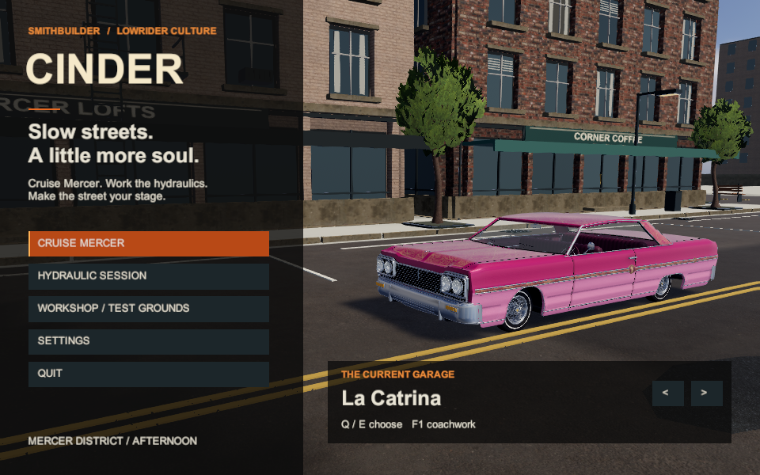
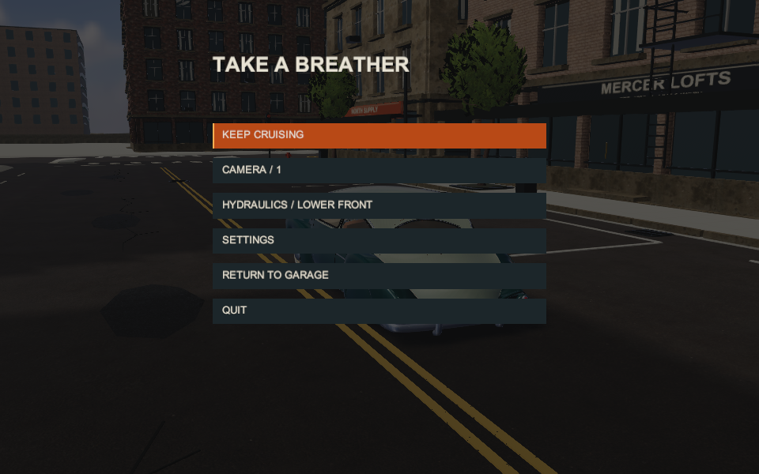
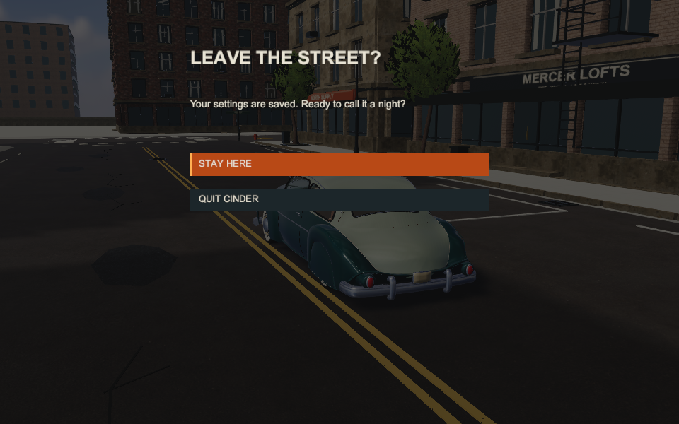
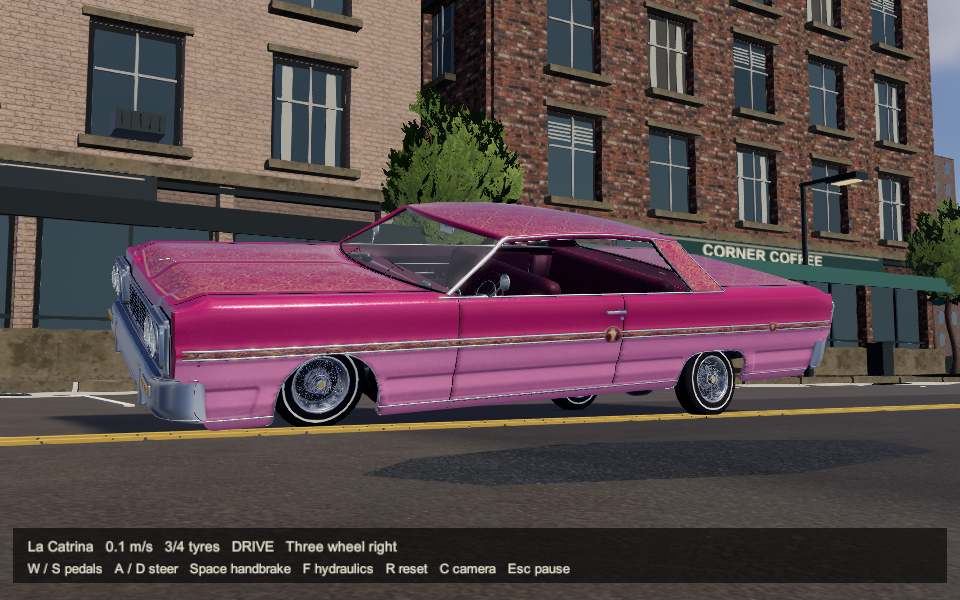
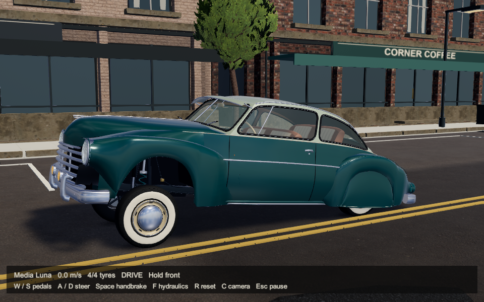
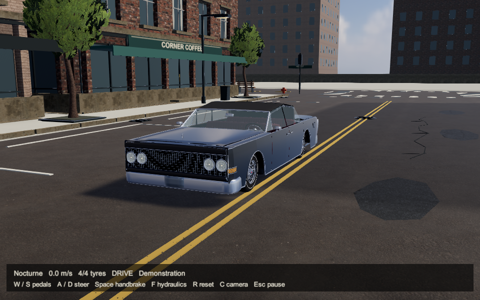

CINDER / NOVEMBER 11 / ACTUAL UNITY PLAYERBetter contact.
A little light around chrome.
The Windowseat assessment informed three small refinements: supported tyres shade nearby road fill, bright HDR glints gain a soft glow, and colour stays at higher precision through anti-aliasing with static sub-byte dither at output. Sun, sky, paint, reflections and driving rules retain their calibrated values.
Independent reviewers support this limited prototype refinement. Lighting 7/10, cars 7/10, city 6/10. A small bloom spill onto dark upholstery remains polish work. The broader art target is still unmet; this is a subtle change, not a city art overhaul.
Independent lighting review · Independent quality review · Technical evidence · Delivery
Matched player comparison
Left: published r24. Right: r25. Identical camera and recorded simulation state. Drag to compare unchanged captures. This focused control is separate from the six-still main review packet.
Look at tyre contacts and thin chrome glints. The paint palette remains the same.
Original player capture / 69 seconds
2,070 original 960 x 600 frames at 30 fps, silent. Menu, Catrina hop/three-wheel/cruise, Luna lift/lower, Nocturne air/roof. Reviewers sampled original frames and receipts; they did not continuously watch the whole clip. Physical controls, heard audio, enjoyment and handheld 1080p/60 remain unverified.
Six-still review packet

Lowrider garage

Pause menu

Quit confirmation

Catrina: three-wheel stance

Media Luna: lifted suspension

Nocturne: raised canvas
853 technical checks and ten scripted menu checks pass. Matched capped median: r24 33.3342 ms, r25 33.3425 ms; p99: 42.4247 / 35.1378 ms. Draws: 216 / 219. Active geometry: 693,585 triangles in both. These short PNG-IO measurements do not establish GPU headroom or target-device performance.
Identity and hashes · Validation · Preserved r24 review